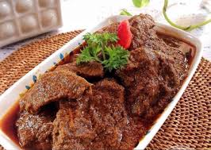

<< DAFTAR RESEP
Bahan-Bahan |
Cara Membuat
Rendang

Kebanyakan dari kita kalau ke restoran Padang pasti langsung pesan rendang. Tak salah memang karena ini merupakan masakan nusantara yang melegenda. Bahkan makanan ini berada di posisi pertama dalam jajaran 50 makanan dunia terenak versi CNN loh
Bahan :
- Daging sapi500 gram
- Santan Kelapa 2500 ml
- 3 cm lengkuas dimemarkan
- 2 batang serai diambil bagian putih dan memarkan
- 2 lembar daun kunyit dibuat simpul
Bahan bumbu dihaluskan:
- 12 buah cabai merah keriting
- 5 buah cabai merah besar dibuang bijinya
- 12 butir bawang merah
- 4 Siung bawang putih
- 4 butir kemiri disangrai
- ½ sdt merica butiran
- 1 sdm ketumbar butiran
- 3 sdt garam
- ½ sdt gula pasir
- 3 cm jahe
Cara Membuat :
- Pertama, ambil dagingnya lalu silahkan dipotong-potong 2cm melawan serat supaya empuk lalu sisihkan dulu
- Masaklah santan encer lalu masukkan lengkuas dan serai. Jangan lupa tambahkan juga daun kunyit dan bumbu halusnya
- Aduk sampai merata lalu masukkan daging dan masak sampai dagingnya empuk
- Jika kuah sudah mengental, kamu bisa mulai menuangi santan kentalnya lalu masak pada atas api kecil
- Aduk terus sampai matang dan juga berminyak serta mengental
Kembali Ke Atas
<< DAFTAR RESEP